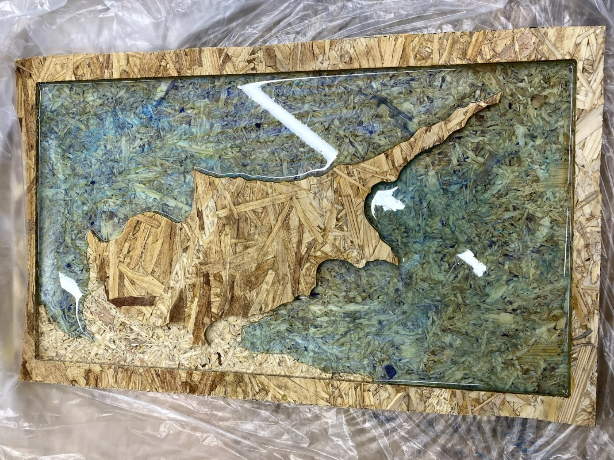

3D Modeling
This is a screenshot of the Fusion 360 software, where I 3D modeled Cyprus.

Milling it Out
After modeling my piece, I used the ShopBot to mill out the surrounding area.

Pouring Resin
I mixed Mica powder into resin, to create a glossy and wavey finish to the ocean around the island.